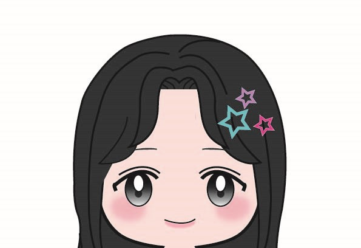
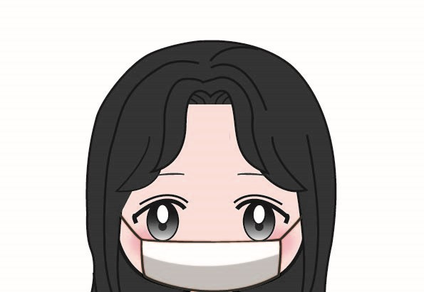
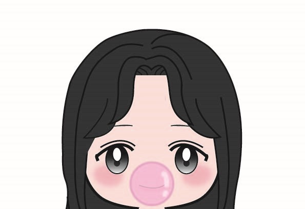
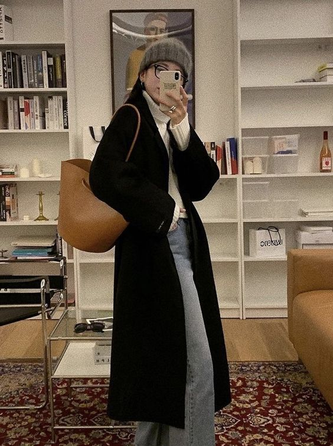

韓系風
風格特色：
低飽和色系、休閒、同色系、層次搭配、街頭
流行元素：
西裝外套、長版風衣外套、牛仔褲、西裝褲、針織
流行背景：
1.韓國的城市街頭文化也對韓系穿搭風格產生了影響。年輕人喜歡在街頭上展示他們的個性和時尚品味，街頭時尚成為韓系穿搭風格的一個重要元素。
2.韓國擁有許多知名的時尚品牌和設計師，他們的作品對韓系穿搭風格的發展起著重要作用。
3.韓國流行文化十分著名，年輕人經常效仿他們喜愛的明星的穿著風格。